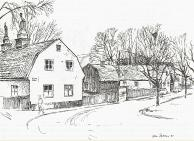
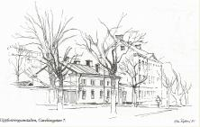

Södermalm i tid och rum
Faggens i faggorna Gaveliusgatan
|
Barnängsgatan, som gatstumpen mellan Vita Bergen och Barnängsområdet förr kallades, bytte efter
sekelskiftet namn till Gaveliusgatan efter textilfabrikens skapare Jacob Gavelius. I kanten av parken och med gatnumret 5 A ligger ett litet stenhus med brutet tak. På gaveln sitter en minnesskylt som säger oss att här inrymdes Faggens krog från 1700-talets början. Nu är det privatbostad under kommunens hägn, så det är ingen idé för törstande att kliva in och beställa vin eller starkdrycker som på Bellmans tid. |
 
|
Om hans sångmö Ulla Winblad, verklighetens Maria Christina Kjellström, stundom besökte Faggens var det inte bara för att tömma en bägare. Hon kunde lika gärna göra sig ärende till trädgårdsmästaren och innehavaren av Faggens trädgård. Han hette Erik Nordström och uppträder i Bellmans diktning. Att han skulle skänka lättsinniga "Ulla" en blomma att fästa i håret kan vi gärna tro. Han var nämligen hennes svärfar.
|
 
|
Tiden har länge stått stilla här uppe vid Faggens krog. Gaveln på grannhuset Gaveliusgatan 5 B ger ett nästan overkligt ålderdomligt intryck. Om väggar kunde tala skulle dessa nötta bräder skvallra om förväntans vårar, förlåtelsens somrar, ruelsens höstar och ångestens isande vintrar. Vi kan också räkna med förtvivlade mångbarnsmammor; gråtande ungar, trätande käringar och fulla karlar. Likaväl må skratt ha skallat mellan husen och stunder av lycka snuddat också vid dessa krypin intill Vita Bergen. |
Att det inte alltid gick så glatt till i nästa hus, nummer 7, kan vi gott förstå om vi uppmärksammar järngallret för fönstren och får veta att här tidigare låg en "uppfostringsanstalt för vanartiga flickor". Några försök att i ordvändningar förgylla upp det hela hade man inte på 1800-talet. En uppfostringsanstalt var vad det var och ett dårhus likaså. Det går kalla kårar längs ryggraden när man hör de här raka, osminkade benämningarna. Nu kallas allt för vård, i varje fall på papperet. Anstaltsbarnen, som var i åldern 7-14 år, erhöll under kompetenta lärare folkskoleundervisning och var 1895 till antalet 77 stycken. Deras öden kan vi blott gissa ...